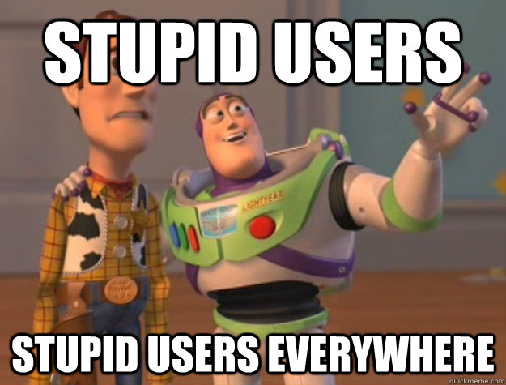
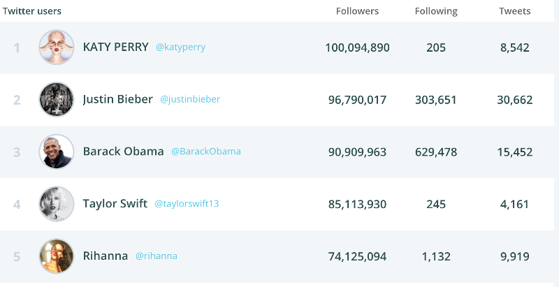
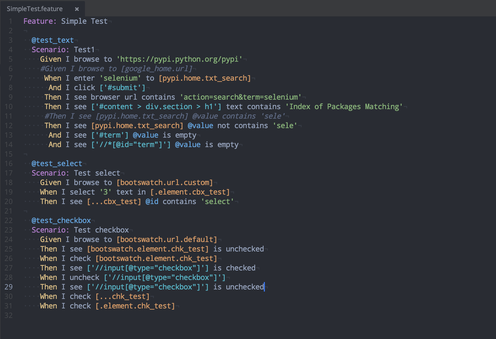
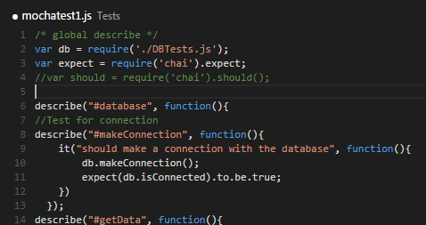
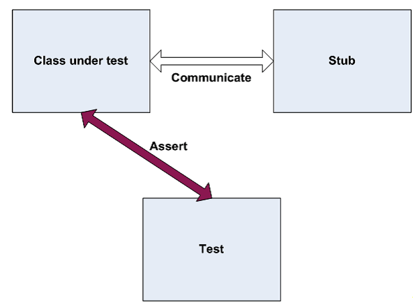
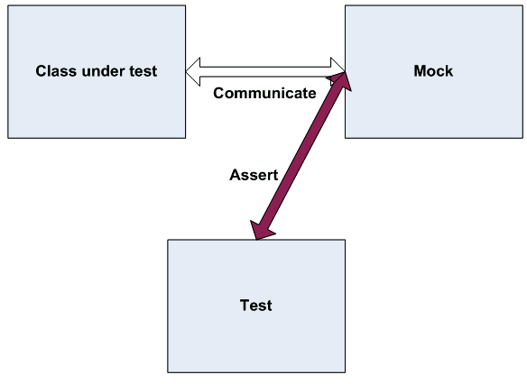

Writing
maintanable tests
Why we have to test our programs ?
To ensure that what we create does what it’s supposed to do
right things
There’s always a chance that a user really will do that – no matter how silly it seems.

Something that works when one person is using it may not work when hundreds of people are using it.
There are lots of different devices, browsers, and operating systems out there.
We owe it to our users and ourselves to deliver the best application we can.
Why we are automating testing process ?
Automated Software Testing Saves Time and Money
Vastly Increases Your Test Coverage
Testing Improves Accuracy
Automation Does What Manual Testing Cannot
Automated QA Testing Helps Developers and Testers
QA and Dev Team Morale Improves
Different kinds of testing

tests clacifications
execution process
- manual
- semi-automated
- automated
realtive to system under test
- black-box
- white-box
person who is doing testing
- QA
- Customer (end user)
- Developer
areas covered by tests
- functional testing
- security
- system load
by scope
- whole system
- feature
- compoenent
- integration
Different kinds of testing
Functional Testing
- performed by testers
- testing against design and use-case document
- black-box testing
User Acceptance testing (UAT)
- performed by clients / end-users
- testing against design and use-case document
- check if software meet requirements
Integration Testing
- performed by QA / Dev
- tests the connectivity among multiple units/components
- usually white-box
End-to-end Testing
- performed by QA
- mimic real life scenarios
- test whole system
Performance Testing
measures the response time of an application with an expected number of usersLoad Testing
check the behavior of the software under normal and over peak load conditionsStress Testing
like load testing but we resume the load on the server for a long period, say 1 hourBreak Point
increasing the load on the server, until the server cannot handle any more requests and it crashesSmoke testing
- performed by QA
- check if new build is stable enough
- major functionality is working
Regression Testing
- performed by QA
- set of functional regression tests and unit tests
- find defects which were introduced after current feature / sprint
Functional vs Acceptance

Functional Testing
- verification activity
- correctly working product
- "doing things right"
User Acceptance Testing
- validation activity
- cooperation with the customer
- "doing right things"
Acceptance Testing "ilities"
- Reliability, Availability
- Scalability
- Usability
- Security (Securability)
- Maintainability
- Configurability
V-Model

Maslow's pyramid of testing

Unit tests a great because of:
- they are cheap
- they are fast
- high coverage
- point to exact error place
- feedback loop is very short
Unit tests a weak in:
- integration of components
- configurations
- integration with framework
Integrations tests a great because of:
- checking contracts fullfiling
- external system integration
- framework expectations
Integrations tests a weak in:
- they a slow
- rely on configuration
- coupled to frameworks
- low coverage
End-to-end tests a great because of:
- simualte real-life use cases
- all components are integrated
End-to-end tests a weak in:
- they a REALLY slow
- they are fragile (always red)
- find a problem - issue
Unit tests
key point
- automated
- written by developers
- white-box
- small scope (component)
F.I.R.S.T
- fast
- isolates / independent
- irepeatable
- self-verifying
- timely
3 phases tests ( aka 4 phases)
- arrange
- act
- assert
- teardown (
BDD style
Gherkin
Gherkin
- Domain-Specific language
- Business readable
specifications
seams
is a place where you can alter behavior in your program without editing in that place. the place where we can inject test doubletest doubles
is a generic term for any case where you replace a production object for testing purposesXUnit Test Patterns (Gerard Meszaros)
- Test Double
- Dummy
- Stubs
- Spies
- Mocks
- Fake *
Mocks vs Stubs
Stubs
Mocks
going deeper

while the unit-testing is pretty old, but ...
there is no single way how to do it
two schools of TDD
- London-school / interaction-style / mockist-style
- Detroit-school / state-based / classic-style

London school
- top-down use cases
- nice to use when there are collaborators
- heavelly usage of mocks
- big coupling to implementation
- hard to refactor code
Detroit school
- bottom-up use cases
- focus on refactoring
- decouple tests from internals
- try to avoid mocks
summary
- high-level components - London
- many collborations - London
- internal algorithm - Detroit
- domain enteties - Detroit